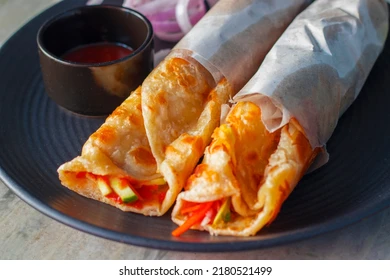

Kolkata Egg Roll

Indian egg rolls, also known as "Kathi rolls" or simply "egg rolls," have a rich history rooted in the street
food culture of Kolkata (formerly Calcutta), West Bengal. The concept originated in the early 20th century, with
Nizam's, a popular eatery established in 1932, often credited with inventing the Kathi roll. Initially, they served
kebabs on skewers (known as "kathi" in Bengali) but later innovated by wrapping these kebabs in parathas to make them
more portable and convenient for customers
Over time, the concept evolved, and one of the most popular variations emerged by adding a layer of egg to the paratha
before wrapping it around the filling. This egg layer enhanced the flavor and richness of the roll, making it a beloved
street food. The popularity of egg rolls spread beyond Kolkata to other parts of India, becoming a common street food item
in many cities and often customized with various fillings such as chicken, mutton, vegetables, or paneer. Today, Indian
egg rolls are cherished for their delicious taste and convenience, embodying a fusion of tradition and innovation in Indian
cuisine.
Ingredients
- 2 eggs
- 1 rotis or parathas
- oil or Ghee
- 1 large onion, thinly chopped
- 1 medium ,finely chopped
- 1 green chili , finely chopped (opitonal)
- 1 tsp corander leaves ,chopped
- 1 tsp chaat masala
- black peper to taste
- 1 tsp red chili powder
- 1 tsp gram masala
- ketchup or any preferred sauce
- salt to taste
- green chutney
For cooking:
Indian Egg Roll Reciepe:
- Prepare the Rotis/parathas
- Cook the rotis or parathas on a tawa until both sides are golden brown. Keep them aside.
- Preapre the filling:
- In a bowl, mix the thinly sliced onions, chopped tomatoes, green chili, coriander leaves, chaat\
masala, salt, and black pepper. Set aside.
- cook the Eggs:
- Beat one egg in a bowl with a pinch of salt and pepper.
- Heat a little oil on a tawa or frying pan.
- Pour the beaten egg onto the tawa and place one roti/paratha on top of the egg before it sets.
- Press gently so the egg sticks to the roti/paratha. Cook for 1-2 minutes, then flip and cook the other
briefly. Repeat for the remaining eggs and rotis/parathas.
- Assemble the Rolls:
- Place the egg-coated roti/paratha on a plate, egg side up.
- Add a portion of the prepared filling in the center.
- Drizzle with ketchup or green chutney as desired.
- Roll the roti/paratha tightly around the filling.
- Serve
- Serve the egg rolls hot with additional ketchup or chutney on the side.